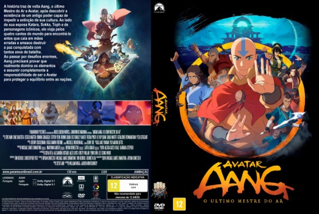

![link to Avatar Aang: O Último Mestre do Ar [Autorado] on Rotten Tomatoes](../img/tomatoes.png)
![link to Avatar Aang: O Último Mestre do Ar [Autorado] on TheMovieDb](../img/themoviedb.png)

Outro Título:Avatar Aang: The Last Airbender
País:United States, 99 minutos
Idiomas falados:Inglês, Português
Gênero(s):Animação, Ação, Aventura, Fantasia
Diretor(s):Lauren Montgomery
Escritor(es):Tim Hedrick, Christopher L. Yost
Codec:MPEG-2 (DVD)
Número: 5958


Certificado:12
Sinopse:
O Avatar Aang, o último mestre do ar do mundo, toma conhecimento de um poder antigo que poderia salvar sua cultura da extinção. Com a ajuda de seus amigos, ele embarca em uma busca global para encontrá-lo antes que caia em mãos erradas e ameace destruir a paz que eles sacrificaram tudo para alcançar.
Elenco:


Tipo de mídia: DVD5,
Legendas: Português, Sem Legendas
Alugado: Não
Tela: Anamorphic Widescreen